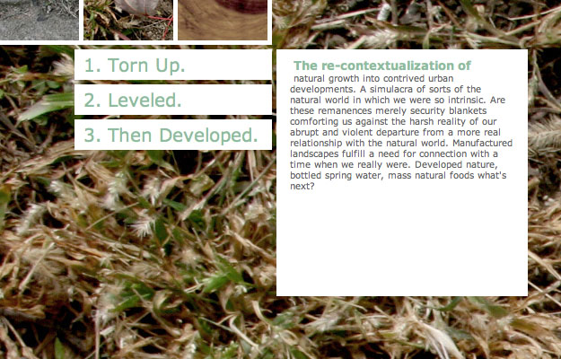

The Idea:
In most cases these days it is far more efficient and cost effective to solve a problem without really solving the problem at all. If patching a hole is more cost effective than figuring out how the hole got there in the first place, why not just patch the hole? We build more roadways to accommodate our ever growing commuter culture, but how far must it go? With the ever increasing time we spend on the road especially in traffic jams, when will the time come when we stop building more roads and try to understand this phenomena for what it is and what is behind it. A site as a catalyse for discussion on the topic at hand, how do we address this problem? Do we really need to expand our concrete landscape even farther, when will it cease?